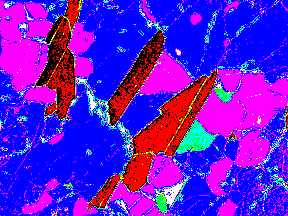

Mineral Image and Default Color Table (Direct Graphics)

The TVLCT procedure loads the display color translation tables from the specified variables. Although IDL uses the RGB color system internally, color tables can be specified to TVLCT using any of the following color systems: RGB (Red, Green, Blue), HLS (Hue, Lightness, Saturation), and HSV (Hue, Saturation, Value). Alpha values may also be used when using the second form of the command. The type and meaning of each argument is dependent upon the color system selected, as described below. Color arguments can be either scalar or vector expressions. If no color-system keywords are present, the RGB color system is used.
TVLCT, V 1 , V 2 , V 3 [, Start ] [, / GET ] [, / HLS | , / HSV ]
or
TVLCT, V [, Start ] [, / GET ] [, / HLS | , / HSV ]
TVLCT will accept either three n -element vectors ( V 1 , V 2 , and V 3 ) or a single n -by-3 array ( V ) as an argument. The vectors (or rows of the array) have different meanings depending on the color system chosen. If an array V is specified, V [*,0] is the same as V 1 , V [*,1] is the same as V 2 , V [*,2] is the same as V 3 . In the description below, we assume that three vectors, V 1 , V 2 , and V 3 are specified.
The V 1 , V 2 , and V 3 arguments have different meanings depending upon which color system they represent.
If the GET keyword is specified, V 1 , V 2 , and V 3 should be set to named variables.
The parameters V 1 , V 2 , and V 3 contain the red, green, and blue values, respectively. Values are interpreted as integers in the range 0 (lowest intensity) to 255 (highest intensity). The parameters can be scalars or vectors of up to 256 elements. By default, the three arguments are assumed to be R, G, and B values.
Parameters V 1 , V 2 , and V 3 contain the Hue, Lightness, and Saturation values respectively. All parameters are floating-point. Hue is expressed in degrees and is reduced modulo 360. V 2 (lightness) and V 3 (saturation) and can range from 0 to 1.0. Set the HLS keyword to have the arguments interpreted this way.
Parameters V 1 , V 2 , and V 3 contain values for Hue, Saturation, and Value (similar to intensity). All parameters are floating-point. Hue is in degrees. The Saturation and Value can range from 0 to 1.0. Set the HSV keyword to have the arguments interpreted this way.
An integer value that specifies the starting point in the color translation table into which the color intensities ( V 1 , V 2 , and V 3 ) are loaded. If this argument is not specified, a value of zero is used, causing the tables to be loaded starting at the first element of the translation tables. The Start argument can be used to change only part of the color table.
Set this keyword to return the RGB values from the internal color tables into the V 1 , V 2 , and V 3 parameters. For example, the statements:
TVLCT, H, S, V, /HSV
TVLCT, R, G, B, /GET
load a color table based in the HSV system, and then read the equivalent RGB values into the variables R, G, and B.
If GET is specified, either V (for the single argument form), or V 1 , V 2 , and V 3 (for the three argument form) must be set to named variables.
Set this keyword to indicate that the parameters specify color using the HLS color system. The plain argument parameters are in the order H-L-S. Hue is expressed in degrees, and the lightness and saturation range from 0 to 1.
Set this keyword to indicate that the parameters specify color using the HSV color system. The plain argument parameters are in the order H-S-V. As above, hue is in degrees, and the saturation and value range from 0 to 1.
This section includes the following simple example as well as the following, more extensive examples:
Highlighting Features with Color in Direct Graphics
Converting Indexed Images to RGB Images
; Initialize display.
DEVICE, DECOMPOSED = 0
; Create a set of R, G, and B colormap vectors:
R = BYTSCL(SIN(FINDGEN(256)))
G = BYTSCL(COS(FINDGEN(256)))
B = BINDGEN(256)
; Load these vectors into the color table:
TVLCT, R, G, B
; Display an image to see the effect of the new color table:
TVSCL, DIST(400)
The data in the mineral.png file in the examples/data directory comes with its own color table. The following example will apply this related color table, then a pre-defined color table, and finally derive a new color table to highlight specific features. Complete the following steps for a detailed description of the process.
Example Code:
See
highlightfeatures_direct.
pro
in the
examples/doc/image
subdirectory of the IDL installation directory for code that duplicates this example. Run the example procedure by entering
highlightfeatures_direct
at the IDL command prompt or view the file in an IDL Editor window by entering
.EDIT highlightfeatures_direct.pro
.
| 1. | Determine the path to the mineral.png file: |
mineralFile = FILEPATH('mineral.png', $
SUBDIRECTORY = ['examples', 'data'])
| 2. | Import the image from the mineral.png file into IDL: |
mineralImage = READ_PNG(mineralFile, red, green, blue)
The image's associated color table is contained within the resulting red, green, and blue vectors.
| 3. | Determine the size of the imported image: |
mineralSize = SIZE(mineralImage, /DIMENSIONS)
| 4. | If you are running IDL on a TrueColor display, set the DECOMPOSED keyword to the DEVICE command to zero before your first color table related routine is used within an IDL session or program. |
DEVICE, DECOMPOSED = 0
| 5. | Load the image’s associated color table with the TVLCT routine: |
TVLCT, red, green, blue
| 6. | Initialize the display: |
WINDOW, 0, XSIZE = mineralSize[0], YSIZE = mineralSize[1], $
TITLE = 'mineral.png'
| 7. | Display the imported image: |
TV, mineralImage
This scanning electron microscope image shows mineral deposits in a sample of polished granite and gneiss. The associated color table is a reverse grayscale.
The following figure shows that the associated color table highlights the gneiss very well, but the other features are not very clear. The other features can be defined with IDL’s pre-defined color table, RAINBOW.
|
|
| 8. | Load the RAINBOW color table and redisplay the image in another window: |
LOADCT, 13
WINDOW, 1, XSIZE = mineralSize[0], YSIZE = mineralSize[1], $
TITLE = 'RAINBOW Color'
TV, mineralImage
The following figure shows that the yellow, cyan, and red sections are now apparent, but the cracks are no longer visible. Details within the yellow areas and the green background are also difficult to distinguish. These features can be highlighted by designing your own color table.
|
|
The features within the image are at specific ranges in between 0 and 255. Instead of a progressive color table, specific colors can be defined to be constant over these ranges. Any contrasting colors can be used, but it is easiest to derive the additive and subtractive primary colors used in the previous section.
| 9. | Define the colors for a new color table: |
colorLevel = [[0, 0, 0], $ ; black
[255, 0, 0], $ ; red
[255, 255, 0], $ ; yellow
[0, 255, 0], $ ; green
[0, 255, 255], $ ; cyan
[0, 0, 255], $ ; blue
[255, 0, 255], $ ; magenta
[255, 255, 255]] ; white
| 10. | Create a new color table that contains eight levels, including the highest end boundary by first deriving levels for each color in the new color table: |
numberOfLevels = CEIL(!D.TABLE_SIZE/8.)
level = INDGEN(!D.TABLE_SIZE)/numberOfLevels
| 11. | Place each color level into its appropriate range. |
newRed = colorLevel[0, level]
newGreen = colorLevel[1, level]
newBlue = colorLevel[2, level]
| 12. | Include the last color in the last level: |
newRed[!D.TABLE_SIZE - 1] = 255
newGreen[!D.TABLE_SIZE - 1] = 255
newBlue[!D.TABLE_SIZE - 1] = 255
| 13. | Make the new color table current: |
TVLCT, newRed, newGreen, newBlue
| 14. | Display the image with this new color table in another window: |
WINDOW, 2, XSIZE = mineralSize[0], $
YSIZE = mineralSize[1], TITLE = 'Cube Corner Colors'
TV, mineralImage
The following figure shows that each feature is now highlighted including the cracks. The color table also highlights at least three different types of cracks.
|
 |
The convec.dat file is a binary file that contains an indexed image (a two-dimensional image and its associated color table) of the convection of the earth’s mantle. This file does not contain a related color table. The following example applies a color table to this image and then converts the image and table to an RGB image (which contains its own color information) and writes it to a JPEG file. Complete the following steps for a detailed description of the process.
Example Code:
See
indexedtorgb.
pro
in the
examples/doc/image
subdirectory of the IDL installation directory for code that duplicates this example. Run the example procedure by entering
indexedtorgb
at the IDL command prompt or view the file in an IDL Editor window by entering
.EDIT indexedtorgb.pro
.
| 1. | Determine the path to the convec.dat binary file: |
convecFile = FILEPATH('convec.dat', $
SUBDIRECTORY = ['examples', 'data'])
| 2. | Initialize the image size parameter: |
convecSize = [248, 248]
| 3. | Import the image from the file: |
convecImage = READ_BINARY(convecFile, $
DATA_DIMS = convecSize)
| 4. | If you are running IDL on a TrueColor display, set the DECOMPOSED keyword to the DEVICE command to zero before your first color table related routine is used within an IDL session or program. |
DEVICE, DECOMPOSED = 0
| 5. | Load the EOS B color table (index number 27) to highlight the image’s features and initialize the display: |
LOADCT, 27
WINDOW, 0, TITLE = 'convec.dat', $
XSIZE = convecSize[0], YSIZE = convecSize[1]
| 6. | Now display the image with this color table. |
TV, convecImage
|
|
A color table is formed from three vectors (the red vector, the green vector, and the blue vector). The same element of each vector together form an RGB triplet to create a color. For example, the i-th element of the red vector may be 255, the ith element of the green vector may be 255, and the ith element of the blue vector maybe 0. The RGB triplet of the ith element would then be (255, 255, 0), which is the color yellow. Since a color table contains 256 indices, its three vectors have 256 elements each. You can access these vectors with the TVLCT routine using the GET keyword.
On some PseudoColor displays, fewer than 256 entries will be available.
| 7. | Access the values of the color table by setting the GET keyword to the TVLCT routine. |
TVLCT, red, green, blue, /GET
This color table (color information) can be stored within the image by converting it to an RGB image. For this example, the RGB image will be pixel interleaved in order to be exported to a JPEG file.
Tip: If the original indexed image contains values of a data type other than byte, you should byte-scale the image (with the BYTSCL routine) before using the following method.
| 8. | Before converting the indexed image into an RGB image, the resulting three-dimensional array must be initialized. Initialize the data type and the dimensions of the resulting RGB image: |
imageRGB = BYTARR(3, convecSize[0], convecSize[1], /NOZERO)
| 9. | Use the red, green, and blue vectors of the color table and the original indexed image to form a single image composed of these channels: |
imageRGB[0, *, *] = red[convecImage]
imageRGB[1, *, *] = green[convecImage]
imageRGB[2, *, *] = blue[convecImage]
| 10. | Export the resulting RGB image to a JPEG file: |
WRITE_JPEG, 'convecImage.jpg', imageRGB, TRUE = 1, $
QUALITY = 100.
The TRUE keyword is set to 1 because the resulting RGB image is pixel interleaved. See WRITE_JPEG for more information.
|
Original |
Introduced |